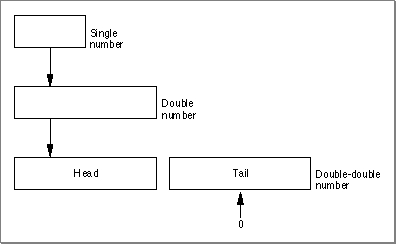
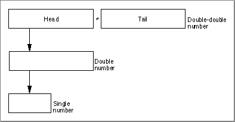

Legacy Document
Important: The information in this document is obsolete and should not be used for new development.
Important: The information in this document is obsolete and should not be used for new development.


Converting Between Floating-Point Formats
PowerPC Numerics supports conversions between all three of its floating-point data formats. This section describes these conversions.Converting Between Single and Double Formats
The PowerPC microprocessor directly supports the single and double formats and conversions between them. When a single format number is converted to a double format number, the conversion is exact.When a double format number is converted to a single format number, it is rounded to the closest single value in the current rounding direction. The conversion might raise the exceptions shown in Table 5-2.
Table 5-2 Double to single conversion: Possible exceptions Exception Raised when Inexact Significand requires > 24 bits of precision Overflow Exponent > 127 Underflow Exponent < -126 Converting Between Single and Double-Double Formats
When a single format number is converted to a double-double format number, the result is exact. The following actions take place (as shown in Figure 5-1):
Figure 5-1 Single to double-double conversion
- The single number is converted to double format.
- The resulting double number is placed in the head of the double-double number.
- The tail of the double-double number is set to 0.
- The sign of the tail is set to the sign of the head.

When a double-double number is converted to a single number, the following actions take place (as shown in Figure 5-2):
Figure 5-2 Double-double to single conversion
- The head and tail of the double-double number are added together.
- The sum is rounded to the closest single value in the current rounding direction.

The double-double to single conversion might raise the exceptions shown in Table 5-3.
Table 5-3 Double-double to single conversion: Possible exceptions Exception Raised when Inexact Significand requires > 24 bits of precision Overflow Exponent > 127 Underflow Exponent < -126 Converting Between Double and Double-Double Formats
When a double format number is converted to a double-double format number, the result is exact. The following actions take place:
When a double-double number is converted to a double number, the following actions take place:
- The double number is placed in the head of the double-double number.
- The tail of the double-double number is set to 0.
- The sign of the tail is set to the sign of the head.
The conversion might raise the inexact exception if the significand requires more than 53 bits of precision.
- The head and tail of the double-double number are added together.
- The sum is rounded to the closest double value in the current rounding direction.